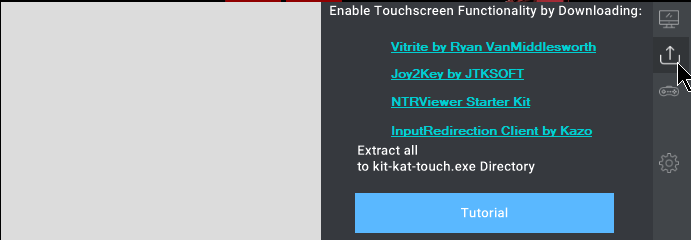
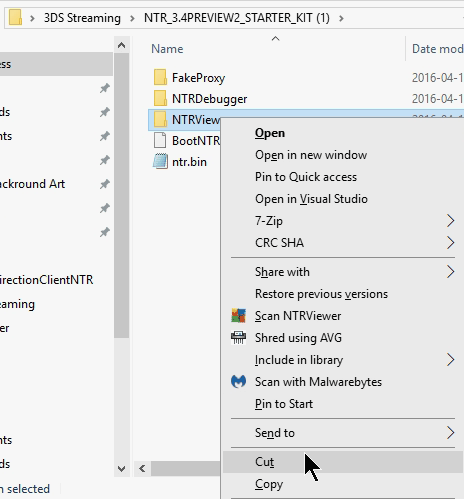
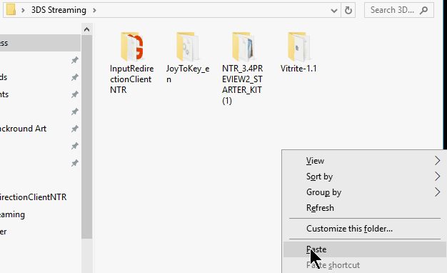
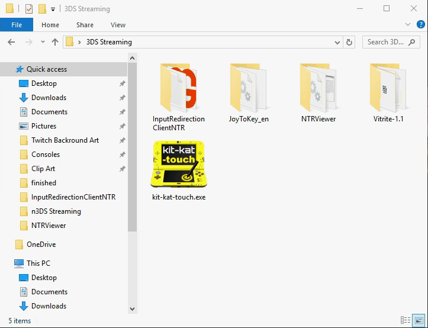

<!DOCTYPE html PUBLIC "-//W3C//DTD XHTML 1.0 Transitional//EN" "http://www.w3.org/TR/xhtml1/DTD/xhtml1-transitional.dtd">
<html xmlns="http://www.w3.org/1999/xhtml">

<head>
<meta content="text/html; charset=utf-8" http-equiv="Content-Type" />
<title>Untitled 1</title>
<style type="text/css">
.auto-style1 {
	font-family: "Segoe UI", Tahoma, Geneva, Verdana, sans-serif;
	font-size: 24pt;
	text-align: left;
}
.auto-style2 {
	text-align: center;
}
.auto-style3 {
	text-align: left;
}
.auto-style4 {
	font-size: 24pt;
	text-align: center;
}
.auto-style5 {
	font-size: 12pt;
}
.auto-style6 {
	text-decoration: underline;
}
</style>
</head>

<body>

<div class="auto-style3">

</body>

</html>
<p class="auto-style1">How to Setup <strong>kit-kat-touch.exe</strong> (part 2)</p>
<hr />
<p class="auto-style3">Download <strong>kit-kat-touch.exe:
<a href="https://github.com/gameincanada/kit-kat-touch/releases/download/v1.0.0/kit-kat-touch.exe">
Here</a> (if you haven't already)</strong></p>
<p class="auto-style3">Open <strong>kit-kat-touch.exe</strong></p>
<ul>
	<li>
	<p class="auto-style3">Click the<strong> Downloads Tab</strong> (<span class="auto-style6"><strong>second 
	tab</strong></span> in the <em>right taskbar)</em></p>
	</li>
</ul>
<p class="auto-style2">
</p>
<ul>
	<li>
	<p class="auto-style3">Download <strong><em>all Four Programs </em></strong>
	(by clicking the links in kit-kat-touch.exe)</p>
	</li>
	<li>
	<p class="auto-style3">Create a <strong>Folder</strong> named <strong><em>
	"3DS Streaming"</em></strong></p>
	</li>
	<li>
	<p class="auto-style3">Put the <span class="auto-style6"><strong>Four 
	Program Zip files</strong></span><strong> </strong>Inside<strong> /3DS 
	Streaming/</strong></p>
	</li>
</ul>
<p class="auto-style2">
</p>
<ul>
	<li>
	<p class="auto-style3">Unzip them all (delete the zips afterwords)</p>
	</li>
</ul>
<p class="auto-style2">
</p>
<ul>
	<li>
	<p class="auto-style3">Navigate to the <strong>NTR_3.4PREVIEW2_STARTER_KIT 
	Folder</strong></p>
	</li>
	<li>
	<p class="auto-style3">Cut <strong>NTR_VIEWER</strong> <strong>Folder</strong>
	</p>
	</li>
</ul>
<p class="auto-style2">
</p>
<ul>
	<li>
	<p class="auto-style3">Paste the <strong>NTR_Viewer Folder</strong> in
	<strong>/3DS Streaming/</strong></p>
	</li>
	<li>
	<p class="auto-style2">
	</p>
	</li>
	<li>
	<p class="auto-style3">Add <strong>kit-kat-touch.exe</strong><em> into</em><strong> 
	/3DS Streaming/</strong></p>
	</li>
</ul>
<p class="auto-style2">
</p>
<ul>
		<p class="auto-style2" style="box-sizing: border-box; margin-top: 0px; margin-bottom: 16px; color: rgb(36, 41, 46); font-family: -apple-system, BlinkMacSystemFont, &quot;Segoe UI&quot;, Helvetica, Arial, sans-serif, &quot;Apple Color Emoji&quot;, &quot;Segoe UI Emoji&quot;, &quot;Segoe UI Symbol&quot;; font-size: 16px; font-style: normal; font-variant-ligatures: normal; font-variant-caps: normal; font-weight: normal; letter-spacing: normal; orphans: 2; text-align: start; text-indent: 0px; text-transform: none; white-space: normal; widows: 2; word-spacing: 0px; -webkit-text-stroke-width: 0px; text-decoration-style: initial; text-decoration-color: initial;">
		&nbsp;</p>
		<p class="auto-style3" style="box-sizing: border-box; margin-top: 0px; margin-bottom: 16px; color: rgb(36, 41, 46); font-family: -apple-system, BlinkMacSystemFont, &quot;Segoe UI&quot;, Helvetica, Arial, sans-serif, &quot;Apple Color Emoji&quot;, &quot;Segoe UI Emoji&quot;, &quot;Segoe UI Symbol&quot;; font-size: 16px; font-style: normal; font-variant-ligatures: normal; font-variant-caps: normal; font-weight: normal; letter-spacing: normal; orphans: 2; text-align: start; text-indent: 0px; text-transform: none; white-space: normal; widows: 2; word-spacing: 0px; -webkit-text-stroke-width: 0px; text-decoration-style: initial; text-decoration-color: initial;">
		<span class="auto-style14">Continue to:</span> <a href="page2.5.html">
		How to Setup <strong><span class="auto-style3">kit-kat-touch.exe</span></strong><span class="auto-style3"> 
		+ <strong>Vitrite </strong></span><em><span class="auto-style5"><strong>(part 
		2.5)</strong></span></em></a></p>
<p class="auto-style3" style="box-sizing: border-box; margin-top: 0px; margin-bottom: 16px; color: rgb(36, 41, 46); font-family: -apple-system, BlinkMacSystemFont, &quot;Segoe UI&quot;, Helvetica, Arial, sans-serif, &quot;Apple Color Emoji&quot;, &quot;Segoe UI Emoji&quot;, &quot;Segoe UI Symbol&quot;; font-size: 16px; font-style: normal; font-variant-ligatures: normal; font-variant-caps: normal; font-weight: normal; letter-spacing: normal; orphans: 2; text-align: start; text-indent: 0px; text-transform: none; white-space: normal; widows: 2; word-spacing: 0px; -webkit-text-stroke-width: 0px; text-decoration-style: initial; text-decoration-color: initial;">
		<em><strong><a href="http://bit.ly/2rm2uy5">Return to the Homepage</a></strong></em></p>
	</div>
</b><hr />
	<div class="auto-style3">
					<div class="auto-style2">
				This Wouldn't be possible without all these Epic People - Make 
				sure to Show them some Love</div>
			<div class="auto-style2">
				<div class="auto-style4">
					<br class="auto-style5" />
					<font size="3">Checkout Pragma @:<br />
					<a href="http://www.twitter.com/pr4gma">http://www.twitter.com/pr4gma</a><br />
					</font>
					<a href="https://github.com/initPRAGMA/kit-kat/releases">
					<font size="3">https://github.com/initPRAGMA/kit-kat/releases</font></a></div>
			</div>
			<p class="auto-style2"><font size="3">Ryan VanMiddlesworth@:
			</font>
			<a href="http://vanmiddlesworth.org/vitrite/"><font size="3">http://vanmiddlesworth.org/vitrite/</font></a></p>
			<div class="auto-style2">
				<div class="auto-style2">
					<font size="3">Kazo @: </font> <a href="https://github.com/Kazo/InputRedirectionClient">
					<font size="3">https://github.com/Kazo/InputRedirectionClient</font></a><br class="auto-style5" />
					<font size="3">Stary2001 @:
				</font>
				<a href="https://github.com/Stary2001/InputRedirection">
					<font size="3">https://github.com/Stary2001/InputRedirection</font></a></div>
				<div>
				</div>
			</div>
			<p class="auto-style2"><font size="3">For all things GameInCanada related Visit:
			</font>
			<a href="http://www.nintend.news"><font size="3">http://www.nintend.news</font></a> </p>
			</b></div>
	</div>
</div>

</body>

</html>
